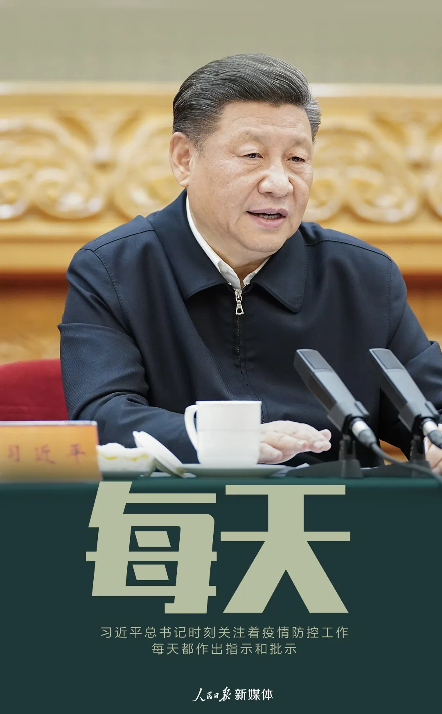
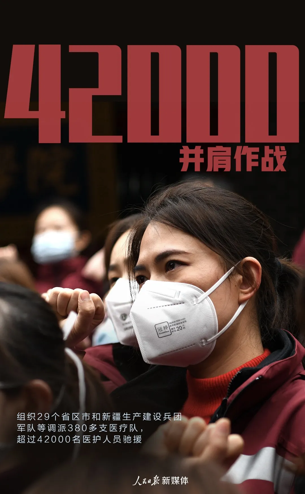
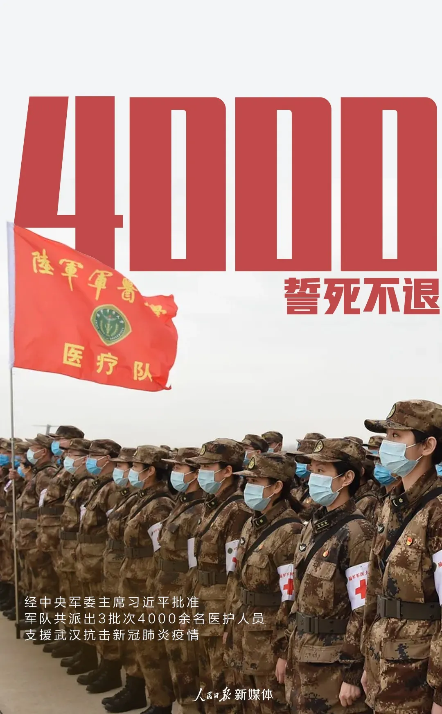
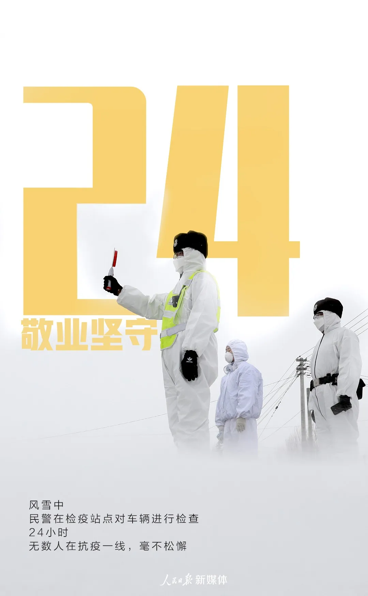
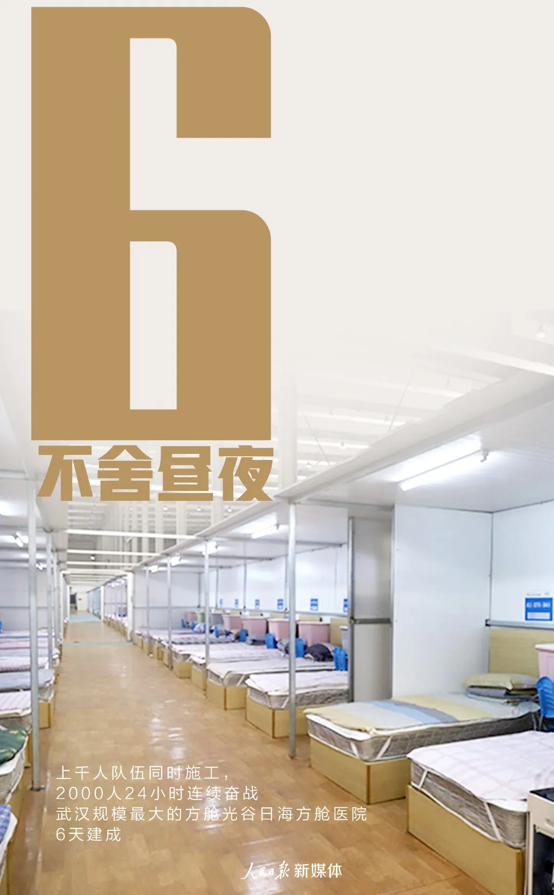

病毒肆虐，举国抗击。疫情防控既是一次危机，也是一次大考。在以习近平同志为核心的党中央坚强领导下， 中国举全国之力战“疫”，为人民的生命健康筑起了坚实“长城”，也以世所罕见的领导力和组织动员力展现出“负责任大国形象”。
疫情发生以来，以习近平同志为核心的党中央及时部署、精准施策，采取强有力措施有效控制了疫情蔓延，及时准确对国内外披露疫情信息，迅速高效开展疫苗研究，并与世界卫生组织保持高效沟通，统筹做好疫情防控和经济社会发展，保持了国内社会大局的稳定。国际社会普遍认为中国采取的坚决有力的防控措施，展现出强大的“领导能力、应对能力、组织动员能力、贯彻执行能力”，生动诠释了什么是“中国力量”。
“中国共产党采取史无前例的安全措施，体现出中国政府各机构各部门极高的协作水平，彰显了中国共产党出色的治理能力”，哈萨克斯坦共产人民党中央书记科努罗夫如此评价。法国前总理拉法兰深刻指出，在疫情面前，中国展现出强大高效的组织和动员能力，这正是中国制度的优势。中国—世界卫生组织新冠肺炎联合专家考察组外方组长、世卫组织总干事高级顾问布鲁斯·艾尔沃德在结束考察后高度赞赏中国应对疫情的做法，并直接表明“中国的方法被事实证明是成功的方法”。
“要全力以赴救治感染患者”，“坚决遏制疫情蔓延势头”，党中央的要求字字铿锵。960万平方公里国度上，14亿人民团结一心、顽强不屈，用坚实的臂膀扛起了抗击疫情的战斗，汇聚起疫情防控的硬核力量，书写了令世界瞩目的伟大“中国抗疫故事”。海外舆论高度赞扬中国医生和科学家们辛勤付出、中国人民无私奉献和自强不息的“中国精神”。
“相信中国人民终将战胜挑战，就像历史上曾经面对的历次困难一样。”南非独立传媒集团执行主席伊克博·瑟维高度赞扬中国人民在为抗击疫情付出的艰苦努力。德国网民们在海外社交媒体上向中国无私奉献的英雄们表达敬意，一位网民深情地写到：尽管中国参与一线疫情防控的工作人员都穿着厚厚的防护服，行动很不方便，但当拍照时，还是会摆出“胜利”的手势，笑着面对镜头。在这样严峻的形势下，中国人也保持着积极乐观心态，努力保护其他人远离病毒。我爱你，中国！大众汽车集团（中国）首席执行官冯思翰感慨到：“我从未见过一个社会有如此的集体奉献精神！”
疫情发生后，在以习近平同志为核心的党中央坚强领导下，各地纷纷启动重大突发公共卫生事件一级响应机制，各部门各地区紧急驰援湖北共同抗击疫情，“火神山”“雷神山”医院数日内建成并投入使用，全国迅速建立联防联控机制。国际社会对中国抗击疫情的强大决心和执行力、集中力量办大事的制度优势、在防控疫情扩散方面的有力措施印象深刻，纷纷点赞并见证“中国效率”。
埃及《消息晚报》总编辑贾迈勒·侯赛因说，“在短时间内建成可收治千余名患者的雷神山、火神山医院，真是一件了不起的事情，世界上恐怕只有中国可以做到！”孟加拉国人民联盟主席、政府总理哈西娜表示，“在习近平总书记的亲自指挥和部署下，中方立即组织救援力量，采取迅速修建多所应急医院、集中收治病患等措施，使疫情得到有效控制”。匈牙利工人党主席蒂尔默强调，中国为抗击疫情付出了巨大努力，世界上没有任何一个国家能够在短时间内高效调动如此多的人力和医疗资源，这充分展示了中国特色社会主义的强大力量。
联合国秘书长古特雷斯表示，为了有效防控新冠肺炎疫情，很多中国人无法过上正常生活。“我要向所有目前生活在中国的人、那些无法过上正常生活的人表达感激之情”，中国人民为防控疫情作出了巨大牺牲，“他们正在为全人类作贡献”。布基纳法索争取进步人民运动代主席孔波雷表示，中国共产党采取的政治决策和卫生防控举措，将成为人类大型流行病管理史上的里程碑。美国库恩基金会主席罗伯特·劳伦斯·库恩指出，“在全球化的世界中应对公共卫生事件，历史很可能为此感谢中国。”
国有国的气质，大有大的样子
在这场疫情大考中
国际社会和世界人民
看到众志成城、共克时艰的中国
看到顽强不屈、逆境奋进的中国
看到迅速出击、蹄疾步稳的中国
看到担当有为、守护世界的中国
这是以行动诠释
这是以行动诠释
这是以行动践行
阻止疫情蔓延的大国担当